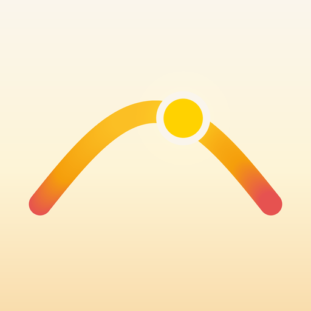

Solis
The sun's path, anywhere on Earth, on any day of the year.
Sunrise and sunset times tell you nothing about where the sun will actually be at four in the afternoon, in the spot you care about. Solis draws the whole path.
- Map dial. Drag anywhere on Earth and watch the day's solar arc redraw over the map.
- AR sky view. The sun's full 24-hour path drawn over your camera view, aligned to true north.
- Any date. Scrub through the year to plan a shot, a garden bed, or a balcony against winter light.
- No ads, no tracking. No account required. Your locations and searches never leave the device.
Sun-position maths based on the NOAA Solar Position Algorithm.
Questions or feedback: hello@trysolis.app